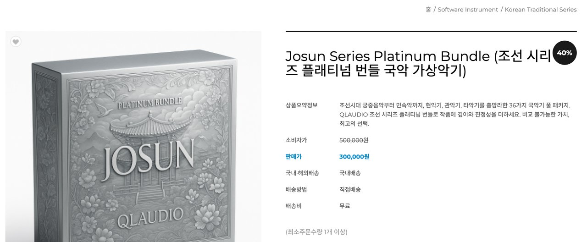

국악 음원 규격화 및 아카이빙
국립국악원 음원을 가상악기로 묶은 협업
Impact
- 36종국립국악원 음원을 규격화해 「조선 시리즈」 가상악기로 출시
Background
국립국악원 음원을 가상악기로 만들려면 먼저 음원들이 같은 사양이어야 합니다. 녹음 시기와 경로가 다르면 포맷도 음량도 파일명 규칙도 제각각이라 그대로는 악기로 묶을 수 없습니다.
Contributions
규격 먼저, 작업은 그다음
포맷과 라우드니스, 이름 규칙을 정리한 규격을 만들고 그것을 기준으로 작업했습니다. 작업자가 여럿이고 음원이 많을 때 판단을 사람에게 맡기면 같은 악기가 파일마다 다른 사양이 됩니다.
성악 음원 손상 복원
오래된 성악 음원의 손상된 구간을 복원하고 노이즈를 제거했습니다. 아카이브로 남을 음원이라 원 연주를 해치지 않는 범위를 먼저 정해 두고 작업했습니다.
가상악기 출시까지
정리한 음원은 국악 가상악기 「조선 시리즈」 36종으로 제작해 출시했습니다.
